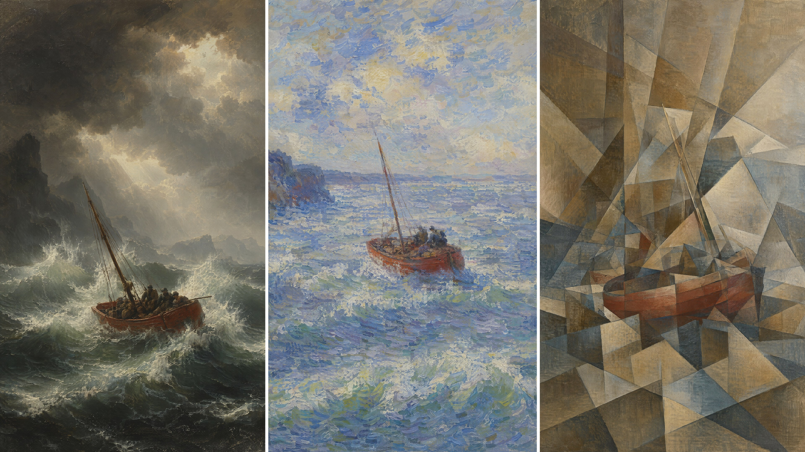
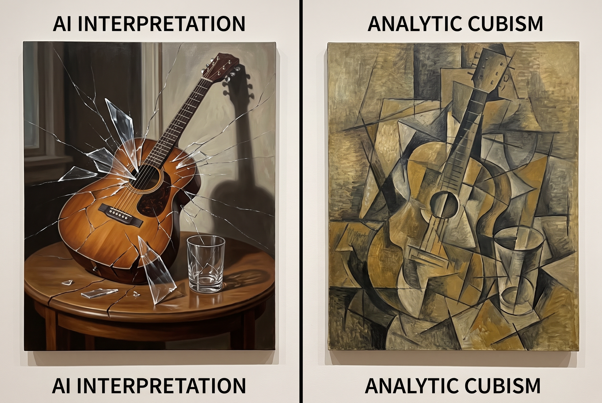

三次断裂——以及两个被模型彻底误解的词：impressionist 和 cubism

上一章那条链（秩序→动势→装饰→秩序）始终在同一个游戏内部换打法：画面是一扇窗，窗外有一个可信的三维世界。现代主义的三次断裂，是逐层拆掉这扇窗。
| 断裂 | 拆掉的是 | 留下的新前提 |
|---|---|---|
| 浪漫主义 | 题材的理性与秩序 | 画面服务于情感强度，自然可以压倒人 |
| 印象派 | "物体有固有色"这个假设 | 画的是光落在物上的瞬间，不是物本身 |
| 立体主义 | 单一视点 | 画面是二维构造物，可以同时容纳多个视角 |
对提示词来说，重点是每一次断裂都把某个物理规则改写了。而模型的默认渲染管线遵守的是未被改写的旧规则。所以这三章的核心动作是：把被改写的那条规则显式写出来，覆盖模型的默认值。
浪漫主义要的是崇高（sublime）——伯克在 1757 年区分了"美"与"崇高"：美来自和谐与令人愉悦的比例，崇高来自巨大、幽暗、无限与恐惧，它是在安全距离外体验危险时产生的快感。这个定义直接给出了构图指令。
透纳（1775–1851）晚期把这一套推到形体几乎消解——《暴风雪：汽船驶离港口》（1842）里，船只剩一点暗影，整个画面是旋转的光与水汽。这里有个对提示词很重要的区分：透纳的"糊"是能量的糊，不是失焦的糊。它有明确的旋涡结构和方向性笔触，中心通常还有一处强光。
a tiny lone figure seen from behind at the lower edge of the frame, facing an enormous wall of storm and sea, dwarfed to near-insignificance, no horizon line — sky and water merge into one churning mass, a vortex of driven snow and spray spiralling around a single burst of pale light, most of the frame unreadable, forms dissolving into atmosphere, directional swept brushwork following the spiral, energy not blur — the strokes have vector, thin translucent scumbled paint over a luminous ground, Romantic sublime landscape, oil on canvas, low viewpoint, the figure occupying less than one twentieth of the frame height
模型：MJ v8.1 · --ar 3:2 · 无负面词
energy not blur — the strokes have vector 是这条里最需要保留的一句。dissolving、atmospheric 这类词单独出现时，模型倾向于用高斯模糊式的柔化来实现，那是照片的语言。补上"笔触有方向"，才会得到绘画性的动势。
印象派是被模型误解得最严重、同时又最容易纠正的流派。误解的形态非常固定：写 impressionist painting，得到的是一张糊的、罩着暖黄滤镜的、笔触被抹平的风景照。
成因不难推断。"impressionistic" 在日常英语里早就泛化成"朦胧的、印象式的、不精确的"，网上大量被标注为"impressionist style"的图其实是加了油画滤镜的照片。模型学到的是这个泛化义。
纠正的办法是绕开这个词，直接写印象派的三条技术规则。这三条都是可描述的物理事实，因此稳定。
这是最有力的一条。传统绘画用加黑或加褐来做暗部；印象派观察到，户外阳光下的阴影里充满了来自天空的散射蓝光，因此阴影偏冷、偏蓝紫，并且倾向于受光色的补色——阳光偏橙黄，则阴影偏蓝紫。这是第 5 章讲过的色温分离在绘画史上的对应物。
写法：
shadows are not black or brown — they are blue and violet, the complement of the warm sunlight, and they are luminous, not dark
luminous, not dark 这半句很关键。补色阴影的明度往往并不低，它靠色相对比而非明度对比与亮部区分。不写这句，模型会给你"深蓝色的阴影"，那还是在按明度思路做。
不在调色板上把颜色调匀，而是把相邻的纯色小笔触并排放在画布上，让视网膜在一定观看距离外完成混合。这样得到的绿，比调出来的绿更亮、更活，因为它保留了各分量的饱和度。
提示词必须强调笔触的离散性和可见性：
separate unblended strokes of pure colour sitting side by side, green made from adjacent dabs of blue and yellow, not premixed, short comma-shaped and blocky dashes, thick and visible, the brushwork never blended into a smooth gradient
never blended 是对抗"糊"的主力否定句。
此前几百年的惯例是在深色底子（褐色、灰色）上作画，由暗向亮堆。印象派改用白色或浅色画底，且大量使用新出现的管装颜料直接户外写生（en plein air）。白底透过薄涂处反光，整幅画的明度基线被整体抬高，这就是印象派看起来"发光"的物理原因。
painted on a white ground that shows through in places, high overall key, no dark underpainting, no earth-tone base
a riverbank with poplars and a small boat, midday in high summer, strong direct sunlight from the upper right, 5600K, shadows are not black or brown but blue and violet — the complement of the sunlight — and they are luminous rather than dark, separate unblended strokes of pure colour placed side by side, the green foliage built from adjacent dabs of blue and yellow, never premixed, short comma-shaped and blocky dashes, thick, visible, directional, the water rendered as horizontal broken slabs of pink, turquoise and white, painted on a white ground showing through at the edges, high overall key, no dark underpainting, no earth-tone base, no smooth gradients, no blending, oil on canvas, painted outdoors in one sitting, contours dissolved by light, casual off-centre framing as if glimpsed, eye level
模型：MJ v8.1 · --ar 3:2 · 无负面词
| 片段 | 它在覆盖什么默认值 |
|---|---|
shadows ... blue and violet ... luminous | 覆盖"阴影=压暗+去饱和"的默认渲染 |
unblended, never premixed, no blending | 覆盖"印象派=糊"的错误理解，逼出离散笔触 |
white ground, high key, no earth-tone base | 覆盖"老油画=暖黄"的默认色偏 |
horizontal broken slabs (水面) | 水面是最能体现并置法的地方，单独给指令收益最高 |
casual off-centre framing as if glimpsed | 印象派受摄影与日本浮世绘影响的偶然性构图，反学院派的居中经营 |
试验建议：这条跑一次，再把 impressionist painting 加进去跑一次，对比两者。多数情况下加了名字反而更糊——这是判断你手上模型对该词理解质量的最快方法。
Monet、Renoir、Degas 的信号比 impressionist 干净得多（作品数字化程度高、名字歧义少）。但人名会同时带来题材绑定：Monet 倾向睡莲与干草垛，Degas 倾向舞者与室内人工光，Renoir 倾向人群与柔化的皮肤。
如果你要画的题材与该画家的典型题材冲突（比如"莫奈风格的工业厂房"），人名会把题材往回拽，产生混合物。题材偏离典型时，优先用技术规则，不用人名。
作为过渡简要交代。三人各自抓住了印象派丢掉的一样东西：
| 画家 | 捡回来的东西 | 提示词写法 |
|---|---|---|
| 塞尚 | 结构。用色块的推拉建立体积，形体被归纳为几何体块，多个视角轻微并存（这是立体主义的直接前身） | form built from flat facet-like patches of colour, planes tilting, structure over atmosphere, multiple slightly conflicting viewpoints in one still life |
| 梵高 | 笔触的表现力。颜料极厚，笔触成为独立的方向性线条，围绕形体流动 | heavy impasto ridges, each stroke a separate directional line swirling around forms, thick paint standing off the canvas |
| 高更 | 平面色域。放弃体积，用轮廓线围出的大块平涂色，色彩主观化（景泰蓝主义 cloisonnism） | flat unmodulated colour areas bounded by dark contour lines, no shading inside the shapes, arbitrary non-naturalistic colour |
其中梵高是整个艺术史里模型理解最准的名字之一——图像数量大、特征极端且高度一致。Van Gogh 一个词的效果往往好过十个描述词。这是个有用的对照：指称的可靠度与该画家在互联网上的图像密度直接相关。
第二个被严重误解的词。写 cubism，多数模型给你的是一个正常的三维物体被玻璃裂纹或多边形碎片特效覆盖——也就是把"立体主义"理解成了"碎裂化处理"。这与立体主义的实际主张几乎相反。
立体主义（毕加索与布拉克，1907 年前后起步）否定的是单一固定视点这个自透视法以来的基本约定。它的做法是：把一个对象从多个角度观察到的面，同时呈现在同一个平面上。小提琴的正面、侧面、f 孔的俯视，被拼在一起；人脸的正面和侧面轮廓共用一个头。
关键差别在这里：
| 碎裂特效（模型的误解） | 立体主义（实际） | |
|---|---|---|
| 三维空间 | 保留。碎片仍在一个透视空间里漂浮 | 取消。画面回到二维，没有纵深 |
| 碎片的来源 | 物体被破坏产生的随机碎块 | 不同视角的完整局部，各自可辨识 |
| 边缘 | 尖锐随机，像玻璃裂纹 | 平直的面与面交接，面之间互相咬合、透叠 |
| 光影 | 正常光照渲染，碎片有投影 | 每个面自带独立明暗，彼此不构成统一光源 |
所以提示词必须同时给出正面指令和否定指令：
the same object shown from several viewpoints at once, front, side and top views of the guitar occupying the same area of the canvas, each view a complete recognisable fragment, not random debris, flat interlocking planes that overlap and pass through one another, no single light source — each plane carries its own independent shading, no depth, no perspective space, everything pressed onto the picture surface, not shattered, not cracked, not broken glass, not a fractured 3D object
末行那串否定值得单独一提：把误解本身写成负面描述，是对付这类语义污染的通用手法。在 MJ 里也可以用 --no shattered, cracked, broken glass。
| 分析期（约 1909–1912） | 综合期（约 1912 起） | |
|---|---|---|
| 方法 | 把对象拆解为多视角的面 | 用现成材料拼贴，从元素组合出对象 |
| 色彩 | 近乎单色：赭石、灰、褐、黑，刻意压低，以免色彩干扰对形体的阅读 | 色彩回归，出现明快的色块 |
| 形体 | 解体到接近不可辨识，密集的小面 | 形体重新变大、变简、变完整 |
| 材料 | 纯绘画 | 报纸、壁纸、木纹纸拼贴（papier collé），加沙子改变肌理 |
| 提示词 | near-monochrome ochre grey and brown, densely faceted, subject barely legible | flat coloured paper shapes, pasted newspaper fragments, faux bois wood-grain paper, simplified large forms |
这个区分对提示词很实用：如果你只写 cubism，模型倾向给综合期的彩色块面（因为那类图更醒目、传播更广）。要分析期必须显式写 near-monochrome——这一句往往能一举把画面拉进正确的年代。
a seated man with a guitar, the head shown as full-face and profile at the same time, sharing one contour, the guitar's front, side and sound-hole seen simultaneously in the same area, each fragment a complete recognisable part, never random debris, flat interlocking planes overlapping and passing through one another, narrow near-monochrome palette: ochre, warm grey, umber, black, no single light source, each plane carrying its own independent value, no depth, no perspective, no ground plane, everything pressed onto the picture surface, the subject barely legible, dissolving into the field of facets at the edges, Analytic Cubism, oil on canvas, 1911, vertical composition, oval-ish concentration of detail at the centre --no shattered, cracked, broken glass, fractured 3d object, geometric filter
模型：MJ v8.1 · --ar 3:4
dissolving into the field of facets at the edges 描述的是分析立体主义的典型状态：中心密集可辨，向四周逐渐消散进背景，画面没有明确的物体边界。这一条能有效阻止模型画一个"边界清楚的立体主义物体放在背景前面"——那仍然是三维思路。

| 你写的 | 大概率得到的 | 成因 | 绕过 |
|---|---|---|---|
impressionist | 糊 + 暖黄滤镜的风景照，笔触被抹平 | 日常英语里该词已泛化为"朦胧、不精确"；网络图多为油画滤镜照片 | 改写三条技术规则：补色阴影且发光、笔触不调和、白底高调；必要时完全不用这个词 |
cubism | 三维物体 + 玻璃裂纹/多边形碎片特效，仍有透视和投影 | 该词被"碎裂化"视觉效果占据 | 正面写"同一区域同时呈现多个视角、平面互相咬合"，负面写 --no shattered, cracked, broken glass |
cubism（不加年代） | 综合期的彩色大块面 | 综合期图像更醒目、传播更广 | 要分析期必写 near-monochrome, ochre grey umber |
romantic | 爱情、玫瑰、暖光情侣 | 该词的日常义完全压过艺术史义 | 永远不要单用。写 Romantic sublime landscape，或干脆只写崇高的三条构图规则 |
expressive brushwork | 轻微的笔触纹理，效果微弱 | 形容词太软，缺少物理量 | 换成有厚度和形状的描述：thick impasto ridges, each stroke a separate directional line |
plein air 单独用 | 户外写生的场景（画架、画家、公园） | 模型把它读成了题材而非画法 | 写 painted outdoors in one sitting 作为画法描述，并确保主体名词在句首明确 |
本章给了这条规律的两端样本：
· Van Gogh：图像密度极高、词义无歧义 → 极可靠，一个词顶十个描述
· impressionist / cubism / romantic：图像密度高但词义被日常用法污染 → 不可靠
· 第 10 章的 Fan Kuan：词义无歧义但图像密度极低 → 弱信号
遇到一个新的流派词，先问这两个问题，就能预判它能不能单独扛事。不能扛的，一律退回物理层描述。这是整个 PART 04 的通用解法。